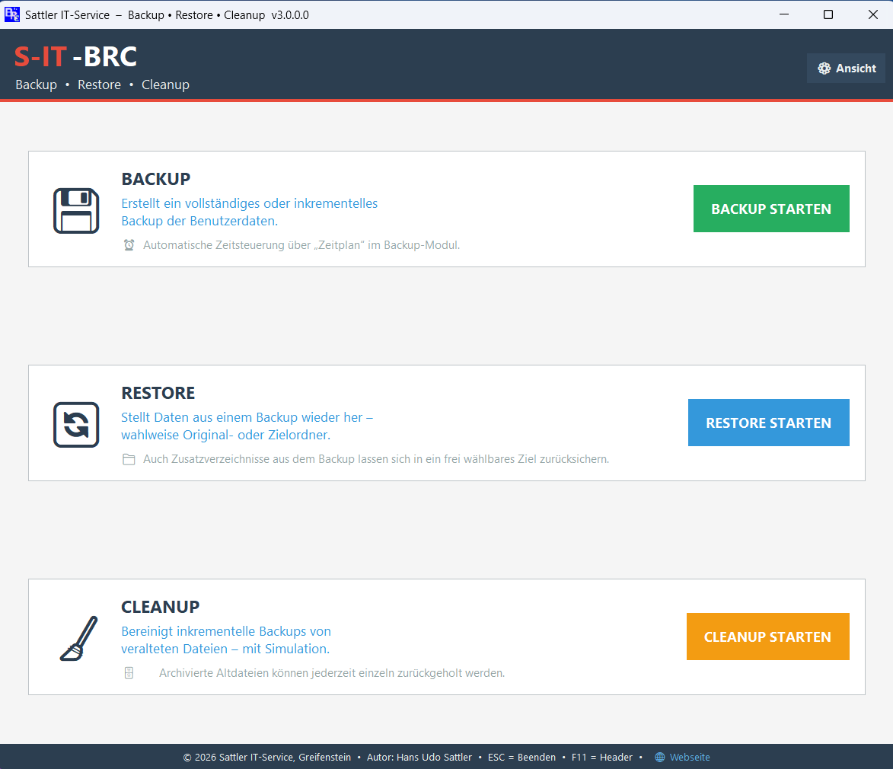
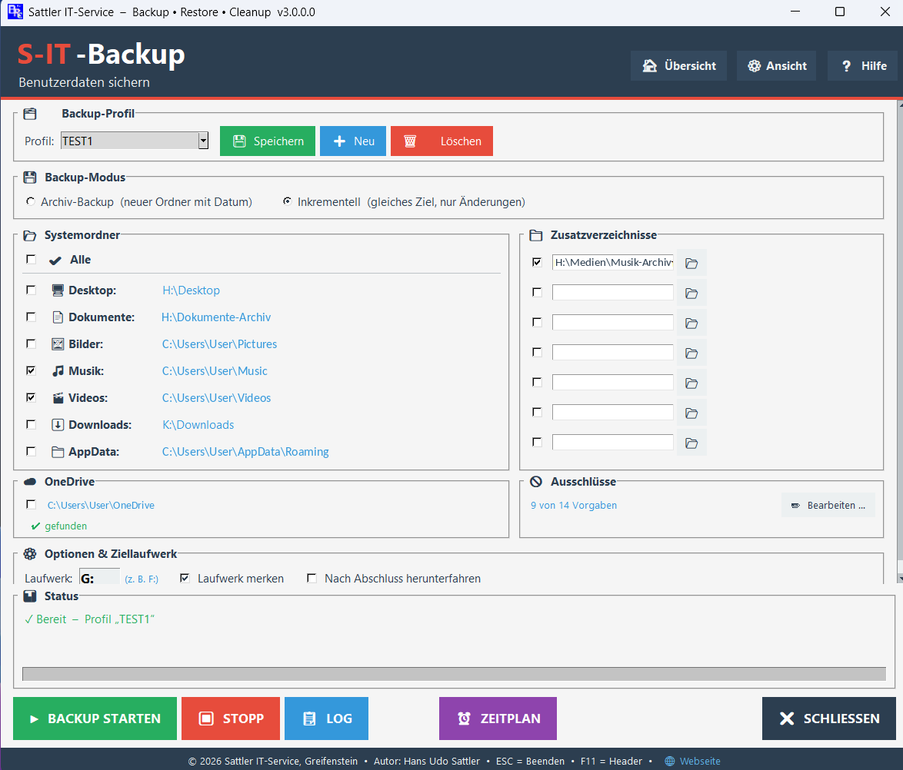
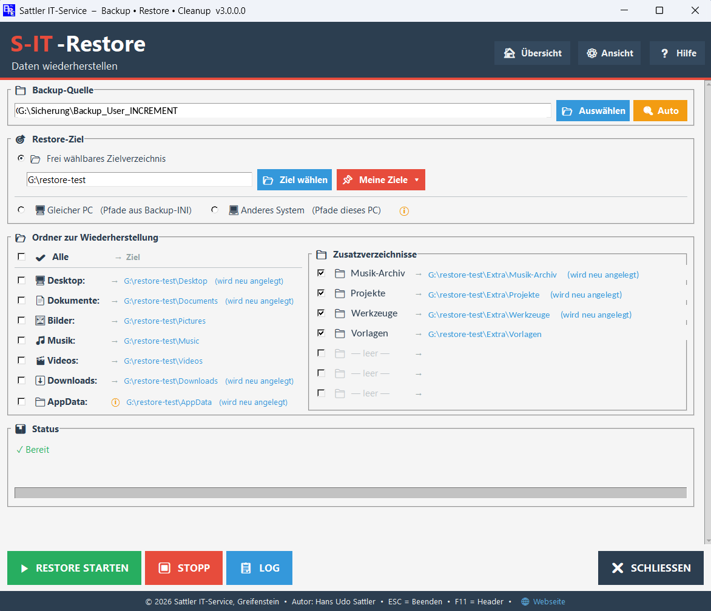
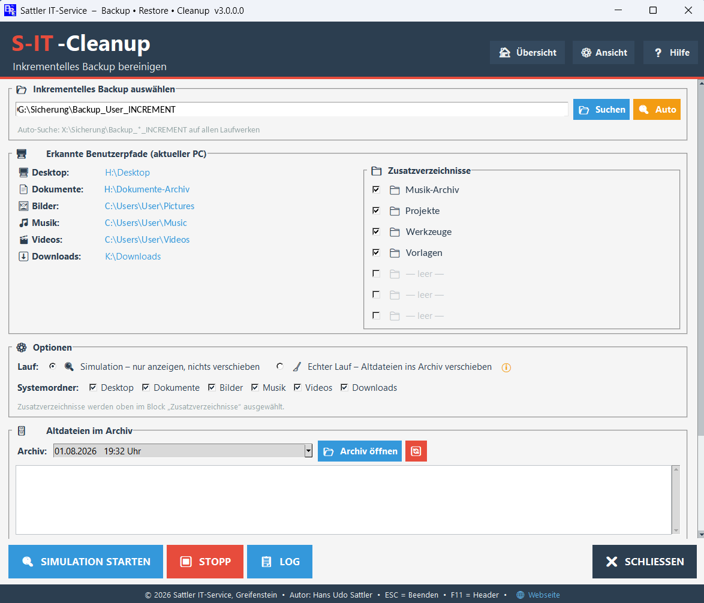

Backup • Restore • Cleanup – Benutzerdaten sichern und wiederherstellen
⬇ Download aktuelle VersionSichert persönliche Benutzerdaten (Desktop, Dokumente, Bilder, Musik, Videos, Downloads, AppData) auf ein externes Laufwerk – inkrementell oder als vollständiges Archiv.
Stellt Daten aus einem Backup wieder her – wahlweise in die Originalordner, in ein frei wählbares Zielverzeichnis oder auf einen anderen PC.
Bereinigt inkrementelle Backups von veralteten Dateien. Simulation vor dem echten Lauf möglich. Gelöschte Dateien werden sicher in einen Archivordner verschoben, nicht gelöscht.
Alle Vorgänge werden protokolliert. Log-Dateien direkt aus dem Programm abrufbar. Backup-INI sichert Originalpfade für spätere Restore-Vorgänge.




Die aktuelle Version, Hilfe-Dateien und Changelog findest du im Release-Bereich.
Windows 10 und Windows 11 (64-Bit)
Administratorrechte werden beim Programmstart automatisch angefordert.
Setup, Deinstaller und Hilfe-Dateien für alle drei Module enthalten.
Da es sich um unabhängig entwickelte Windows-Tools handelt, kann es vorkommen, dass Windows SmartScreen oder installierte Internet-Security-Programme die Datei zunächst als unbekannt einstufen.
In diesem Fall fügen Sie das Programm bitte als vertrauenswürdig bzw. als Ausnahme in Ihrer Sicherheitssoftware hinzu. Gegebenenfalls muss der Windows SmartScreen-Filter für die Installation einmalig bestätigt oder vorübergehend deaktiviert werden.
Alle bereitgestellten Dateien stammen direkt von Sattler IT-Service und werden ausschließlich über die offizielle GitHub-Seite veröffentlicht.
Tipp: Nach der ersten Freigabe läuft das Tool in der Regel dauerhaft ohne weitere Warnmeldungen.
Besprochen bei Deskmodder
Alle Module (Backup, Restore, Cleanup, Launcher) tragen ab sofort eine gemeinsame Versionsnummer für klare Übersicht.
Professionelle Installation mit Verknüpfungen, Startmenü-Eintrag und Eintrag in Windows Programme & Features. Portabel-Modus für USB-Sticks ebenfalls verfügbar.
Alle drei Module verfügen über ausführliche HTML-Hilfe-Dateien, direkt aus dem Programm abrufbar.
Hat Ihnen dieses Tool geholfen?
Die S-IT-BRC-Tools werden kostenlos entwickelt und gepflegt.
Eine kleine Spende hilft dabei, die Tools weiterzuentwickeln. Herzlichen Dank! 🙏
tool-entwicklung@sattler-it.de